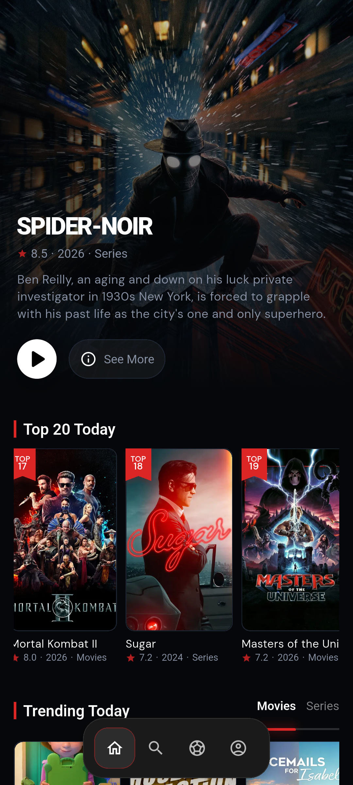
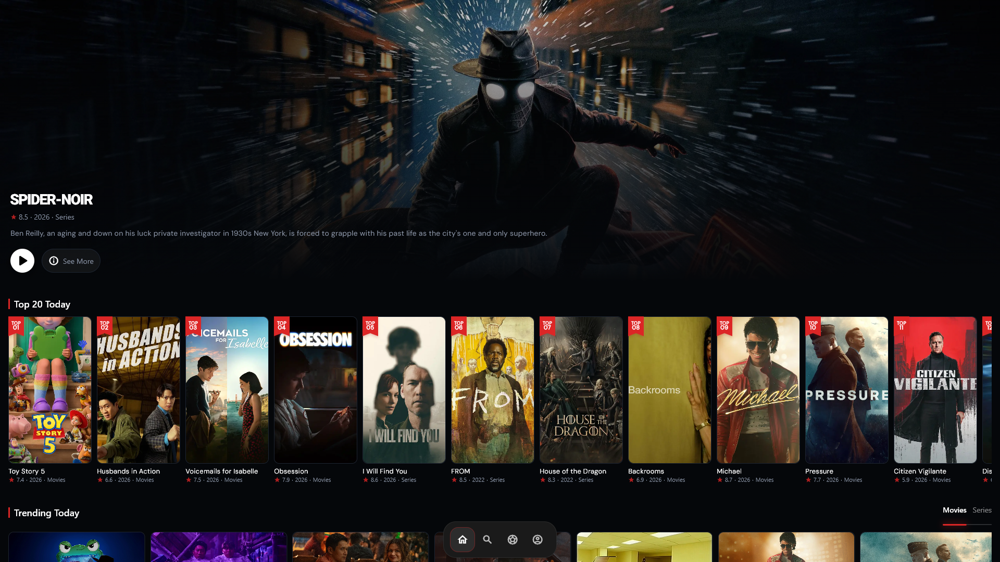

Content Discovery
Home feed with hero slider, trending, top 20 today, provider/genre filters, top rated, and personalized recommendation sections.
A production-grade Flutter application with dual-flavor architecture — Venox for compliant Google Play distribution and Venox Plus for the full streaming experience on Android & Windows. Built with Clean Architecture, Supabase backend, and 6 multi-provider WebView players.


Venox Plus is a cross-platform movie and TV discovery and streaming application built with Flutter and Dart. Users browse TMDB-compatible catalog data, view rich media details with trailers and cast, manage watchlists, and — in the Plus flavor — enjoy multi-provider video streaming directly within the app through embedded WebView players.
The project uses a dual-flavor build-time strategy to split the product: Venox (Play Store compliant catalog app) and Venox Plus (full-featured streaming client for sideload/Windows distribution). Both flavors share a single Supabase backend, enabling unified user accounts, watchlist syncing, and watch progress tracking across platforms.
How a build-time flavor architecture solved the Play Store compliance challenge while delivering a premium streaming experience.
Users need a reliable, multi-provider streaming discovery platform. Google Play prohibits streaming apps, making distribution complex.
Building one codebase that serves both a Play Store catalog app and a full streaming client — without in-app purchases or subscription management.
Android product flavors + compile-time feature flags. Play Store APK (catalog only) and Plus APK/Windows installer (full streaming), sharing one Supabase backend.
Clean separation of concerns, zero IAP complexity, Play Store compliant, and premium distribution maintained outside store channels.
8 feature modules powering discovery, streaming, sports, and user accounts — built with flutter_bloc and Clean Architecture.
Home feed with hero slider, trending, top 20 today, provider/genre filters, top rated, and personalized recommendation sections.
Rich movie and TV detail pages with media_kit trailer playback, full cast lists, season/episode browsing, and watchlist toggle.
Paginated search across movies and TV shows with a reusable PaginationCubit base class — instant results as you type.
6 active WebView streaming providers with a unified polymorphic interface — Peachify, Videasy, Vidking, Cinesrc, Vidlink, and Zxcstream.
Progress tracked every 30 seconds via JS bridge. Resume from where you left off with provider-specific position parameters. Continue Watching on home.
Save media to watch later, synced across devices via Supabase. Add or remove with a single tap from any detail screen.
Football match listings fetched from Supabase edge functions. BeIN Sports channel streaming with dedicated WebView player.
Email/password authentication via Supabase. Guest mode, profile avatars, password change, and cross-device data sync.
Scroll through the app's key screens. Click any screenshot to view it full size.
Screen recordings of the most impressive parts of the application. Click any video to watch full size.
A deep dive into the architecture, patterns, and advanced Flutter techniques demonstrated in this project. This is what recruiters and technical leads care about.
Three-layer separation per feature: view/ → cubits/ → data/ (repo → data_source). Cross-cutting concerns in lib/core/. Each of 8 features is independently structured with its own models, repositories, and state management.
15+ Cubits across the app. Global cubits at app root (Auth, Connection, Rating), feature cubits provided at navigation via MultiBlocProvider. Custom ClosingAwareCubit base class for lifecycle cleanup. Static AuthCubit.myUser singleton for cross-feature user state.
responsive_framework breakpoints for phone/tablet/desktop. Portrait lock with per-screen overrides. window_manager for Windows (1200×800, centered). Skeletonizer for shimmer loading states. flutter_lazy_indexed_stack for performant tab rendering.
Image caching via CacheHelper with SHA-256 key hashing. Backdrop images precached to disk on fetch. Reusable PaginationCubit base class for efficient list loading. Tab content lazily loaded via IndexedStack.
Dio HTTP client with interceptors. dartz Either
Supabase email/password with guest mode (no forced login). Signup via edge function create-user. Token refresh handled by Supabase SDK. flutter_secure_storage for sensitive preferences. Global user state with nested watchlist + history data loaded at login.
6 WebView players behind a unified BasePlayer interface. JS injection for ad blocking, popup removal, and MutationObserver for dynamic ads. Navigation domain lock preventing redirects to gambling/ad domains. 30-second progress polling via JS bridge with deduplication.
Android (two flavors: playstore/plus) + Windows (Inno Setup installer). Shared codebase with platform-specific guards. CI/CD via GitHub Actions for Windows Plus builds (obfuscated, split debug info). PowerShell version sync script for installer metadata.
Arabic/English support with LanguageCubit and secure storage persistence. RTL-aware layout infrastructure ready. Language selection persisted in flutter_secure_storage. Designed for easy expansion to additional locales via JSON asset files.
GitHub Actions workflow for Windows Plus release builds with code obfuscation and split debug info. Inno Setup installer generation with auto-version sync. Static website deployment to GitHub Pages on push to main.
Compile-time feature flags via AppConfiguration.isPlus. Single codebase serving two products (Play Store catalog + Plus streaming). Build-time premium model replacing in-app purchases and subscription management. Android productFlavors in Gradle.
Supabase RLS policies for data access control. envied package for obfuscated API keys/secrets. WebView navigation restrictions blocking external domains and intent:// schemes. Android cleartext traffic configuration. flutter_secure_storage for tokens.
Dependency direction: UI → Cubit → Repository → Data Source. Each layer depends only on the layer below it. Cross-cutting concerns (DI, caching, routing) live in lib/core/.
Every package, service, and tool used in the project — organized by category.
Real technical challenges encountered and solved during development. Click to expand each.
Injected custom JavaScript on page load to block popups, remove ad iframes, force fullscreen video CSS, and set up a MutationObserver to catch dynamically injected ads. Each provider embed page had different DOM structures requiring tailored injection strategies.
Resolution:Built a unified JS injection system with provider-specific overrides. Navigation guards (shouldOverrideUrlLoading) block known gambling/ad domains and intent:// schemes. The Zxcstream provider required special main-frame navigation prevention to avoid redirect loops.
Rather than implementing in-app purchases or subscription management (complex, requires server validation, prone to policy issues), the project uses Android product flavors + separate Dart entry points to create two builds from one codebase.
Resolution:AppConfiguration.isPlus serves as a compile-time gate across 8+ call sites in the codebase. Feature gates are checked in UI widgets, navigation logic, and cubit initialization. The shared Supabase backend works for both flavors without modification.
Since video plays inside a WebView, native media position tracking was not available. Progress is polled every 30 seconds by evaluating JavaScript on the video element to read currentTime and duration. Results are deduplicated to avoid redundant Supabase writes.
Resolution:Each provider has a different resume parameter (startAt, progress, load). The BasePlayer.buildPlayerfullUrl() method handles provider-specific position encoding. Progress saves are tracked by _lastSavedPosition to skip unchanged states.
Streaming depends on third-party embed providers that may change domains, go offline, or alter their embed structure. The app needed resilience against individual provider failures while maintaining a unified user interface.
Resolution:Implemented a PlayerRegistery pattern with 6 active providers behind a BasePlayer interface. The player selection bottom sheet lets users choose alternative providers if one fails. Inactive providers (VaPlayer, VidsyncPlayer) are commented out in the registry for easy reactivation.
Android and Windows behave differently with WebView fullscreen, keyboard shortcuts, and window states. Windows required explicit F11/Escape handler bridging between JS and Dart via the InAppWebView controller.
Resolution:Windows-specific: window_manager sets initial size (1200×800, centered), WindowsWindowHelper bridges F11/fullscreen events. Android: portrait lock except during player fullscreen. Platform checks ensure correct behavior without breaking either platform.
The client uses a single Supabase anon/publishable key. All data access control must be enforced server-side through Row Level Security policies on PostgreSQL tables, not client-side checks.
Resolution:Edge functions (create-user, save-watch-progress, football-matches, bein-stream, for-you) handle server-side logic. The client never has direct database write access outside of authenticated Supabase SDK calls. RLS policies are defined on the Supabase dashboard (backend-side, not in this repository).
Measurable outcomes from the architecture, engineering, and product decisions made in this project.
If you're a recruiter, hiring manager, or potential client looking for an experienced Flutter developer who understands architecture, state management, and shipping production apps — let's talk.